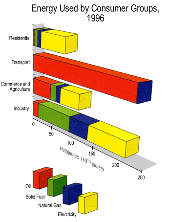
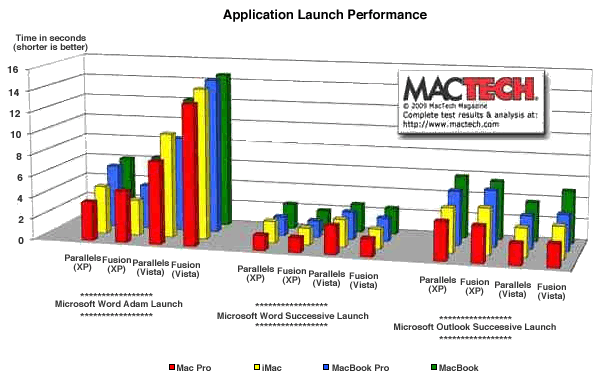

Three-dimensional bar charts
It is tempting to 'artistically enhance' bar charts to compare groups, especially if there are not many groups or categories. In particular, avoid using 3-dimensional versions of bar charts, even though they can be easily produced in spreadsheets such as Microsoft Excel.
It is much harder to read information from 3-dimensional versions of bar charts.
In particular, avoid perspective views of such 3-dimensional representations in which parts of the diagram that are closer to the viewer are magnified — they are usually misleading.
Educational level of children
The 3-dimensional bar chart below shows the numbers of students in primary, secondary and tertiary education in the Philippines, Thailand and Vietnam in 2002.
Drag the centre of the diagram to rotate it. (Press the mouse button and move the mouse with the button held down.) Although the diagram looks pretty, it is now hard to estimate the numbers in the categories. (For example, how many students are in tertiary education in the Philippines?)
Click the button Cluster by country then drag the slider to make the bars narrow enough that they do not overlap. This is equivalent to a clustered bar chart. Click Cluster by level to show the corresponding clustering of the bars by educational level.
Other examples
The following stacked bar chart was published to show the different types of energy used by different types of consumer in New Zealand in 1996.

The third dimension makes it harder to assess the size of the segments. How much Natural Gas is used by Transport? Is it more than the Natural Gas in Residential use?
Even worse, the diagram has been drawn with a perspective viewpoint so the 'nearer' part of the diagram is larger than the part that is further from the viewer. As a result, the segments on the right appear somewhat larger than they actually are.
The final example was published on a web site to compare the performance of different virtual machines running on four Macintosh computers.

It is almost impossible to compare performance on the different Macintosh computers.
Avoid 3-dimensional versions of bar charts — they are just chartjunk.